如何救傷
關於我們
關於狐蝠
支持我們
我要捐款
人本自然 平衡生態
支持我們
您的支持是我們前進的動力，無論是成為志工、捐款或分享我們的理念，都將助力於台灣狐蝠的保育工作。加入我們，一同守護這片土地上的神秘精靈，為未來創造更美好的生態環境。
店家捐款箱
北部
中部
南部
東部
離島
全台
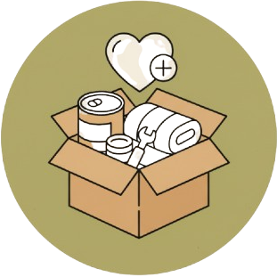
物資募集
物資募集
很感謝您的愛心及惜物的精神。捐贈前請與本機構連絡及詢問是否需要這些物品。
本會將開立實物捐贈收據，若企業有抵稅需求，依據國稅局現行作業規定，捐贈方需自行於年底檢附收據、發票或公司生產費用資料等文件，逕向國稅局申報抵稅。
收到物資後我們將開立捐物收據，並列冊管理。 因此，須請您在寄送／親送物資後留下以下資料，便於開立收據。
蝙蝠調查
蝙蝠錄音分析：
山區分析費用為7250/時(含稅)
平地分析費用為5500/時(含稅)
雜音為半價計算，如有其他特殊需求可詳議。
擺攤推廣
本會有許多不同領域之蝙蝠研究專家，可以提供您不同研究主題的人選，帶給您精彩豐富的演講。
演講分享
教育規劃
企業合作
歡迎各單位找我們洽談及合作
詳細資訊、報價及合作歡迎來信
FormosanFlyingFox@taiwan.org
或臉書粉絲頁私訊詢問
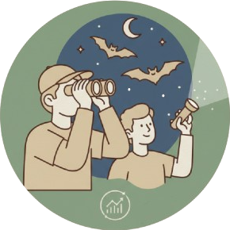
其他服務
公民科學
會員的優惠：
特惠價
購買公益選物店品項。
優先報名
活動、訓練課程，會員之直系親屬與配偶為家庭會員，同享會員優惠價。
免費參加
月會演講、例行與賞蝠活動等，詳見電子報及最新消息。
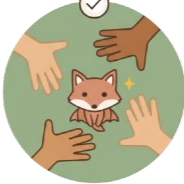
加入我們
加入我們
加入台灣狐蝠保育平台的資格條件？
關心台灣生態，喜歡狐蝠的民眾。
凡年滿十八歲，具有行為能力者，得為本會之會員。
身為本會會員的權利義務？
會員具有對本會理事、監事的選舉權、被選舉權與罷免權。
會員應定期繳納會費、參與會員大會，並應遵守本會章程及會員大會之決議。
會費規則
一般會員:
常年會費為新臺幣
500元
，入會費新臺幣
200
元。(第一次申請需繳納總額700圓整，而後每年繳500圓
學生會員:
常年會費新臺幣
200
元，入會費新臺幣
100
元。(需檢附學生證電子檔，第一次申請需繳納總額300圓整，而後每年繳200圓直至畢業轉為一般會員。)
團體會員:
常年會費新臺幣
5,000
元，入會費新臺幣
5,000
元。(以公司名義申請，人數限
3
人。)
永久會員:
會費新臺幣
10,000
元，只需繳納一次性會費，而後不須繳納常年會費。
公益小舖
為狐蝠插上重生的翅膀
社會企業
我們相信，環保與經濟能夠並行不悖。
小舖的商品整合了質感與簡約風格，且部分商品來自於狐蝠小故事，附帶簡潔的狐蝠小知識，讓「購買」成為一場輕鬆的科普教育。
我們與友善狐蝠棲地的農友以及就業夥伴合作，推廣在地友善的農產品。
所有盈餘都將全數回饋到保育工作：救傷與野放訓練、野外族群研究、環境教育教材、公眾推廣活動
您的消費，不只買了一件商品，更直接灌溉了保育台灣狐蝠的土壤，是您對瀕危物種發出的溫柔承諾。
公益小舖
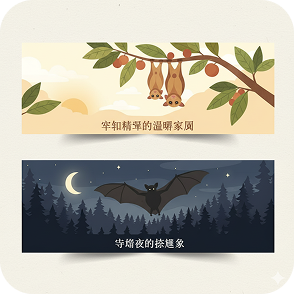 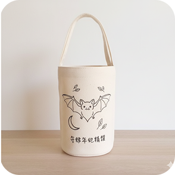
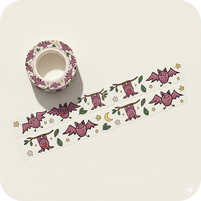 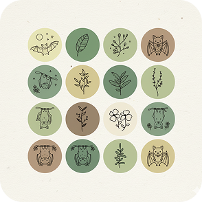
企業合作
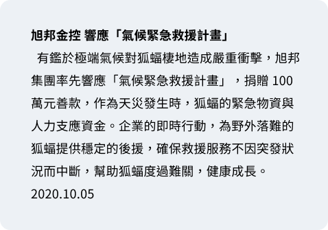 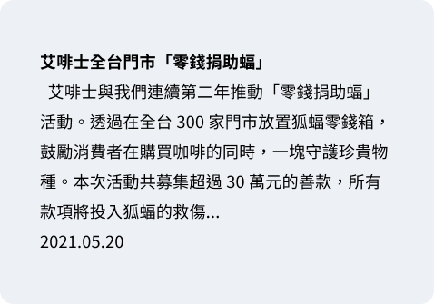 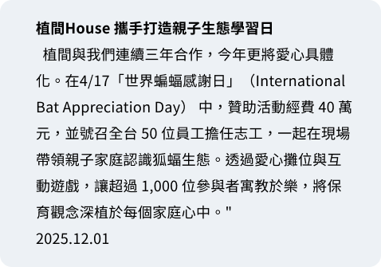 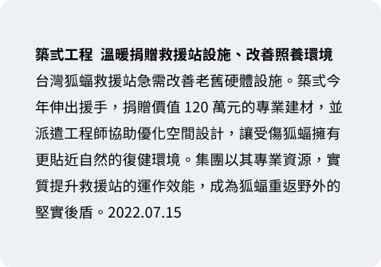
企業合作
基金申請
台灣狐蝠研究與保育人才培育專戶設置及管理辦法
中華民國 99年05月29日第3屆第3次理監事會議討論過
中華民國 100年05月14日第3屆第2次會員大會討論通過
中華民國106年10月6日第5屆第2次理監事會議修正
第一條台灣狐蝠保育網人才培育專戶（以下簡稱本專戶），為台灣狐蝠保育網（以下簡稱本機構）成立。
第二條 本專戶為培育研究與保育臺灣地區（含離島)狐蝠人才目的而設置。
第三條 本專戶之經費來源如下：
一、自由捐贈。
二、公益小舖。
三、研究保育基金。
四、上一年度之結餘提撥。
五、利息。
六、其他。
第四條本機構設置專戶管理小組，小組成員由機構理、監事擔任。
第五條本專戶動支原則如下：
一、本專戶得
補助出席國際蝙蝠相關會議或發表關於臺灣狐蝠研究之論文，每篇出國發表之論文以補助一人為原則，每人每年以補
助一案為限，補助金額以新臺幣壹萬元整為上限
，原則上以全職學生且當年度未獲其他補助者為優先。接受本基金補助之發表論
文，應於論文內向台灣狐蝠保育網之經費補助致謝。
二、本專戶補助案每年以補助至多十件為原則，補助申請應於會議舉辦一個月前向保育網提出，經專戶管理小組審查，半數以上成
員同意後核定補助金額。
三、依前項第一、二款獲得補助之相關研究或活動成果應無償供本會作為教育推廣使用。
第六條本專戶應於金融機構，非經會員代表大會議決，不得挪為它用。
第七條本專戶之明細、收支，應納入本學會會計程序，並於會員大會定期公布財務報表。
第八條本專戶結束時，應予清算，所有財產應解繳本會。
第九條本辦法經會員大會審議通過後實施，修正時亦同。
基金申請
 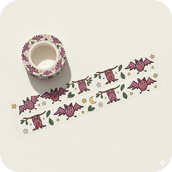
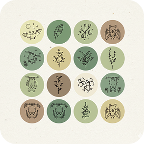
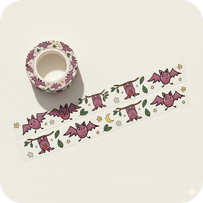
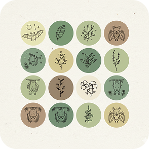